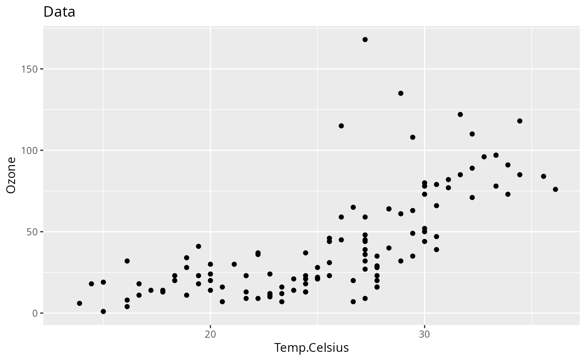
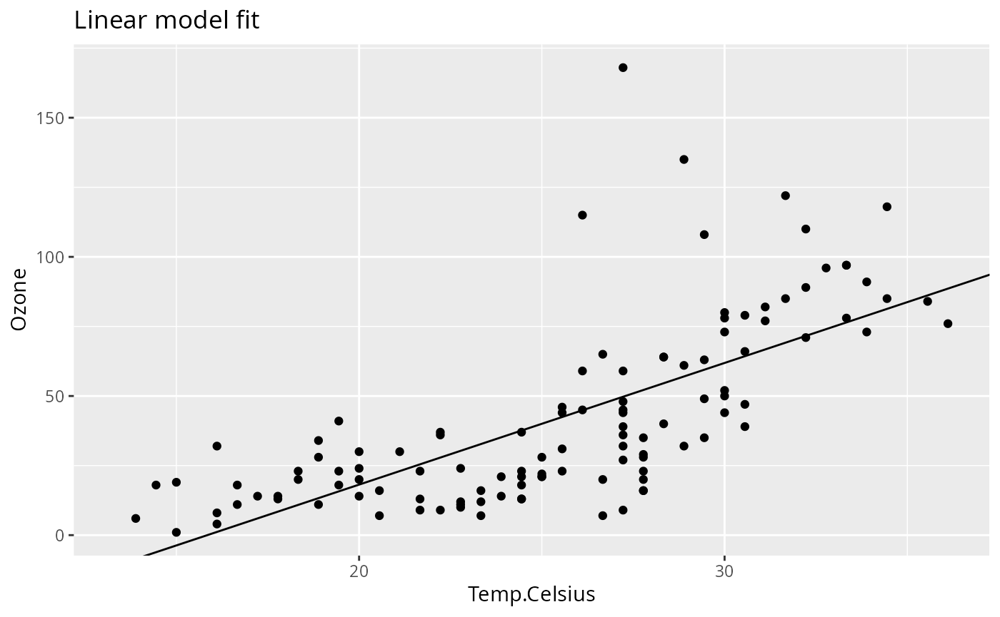
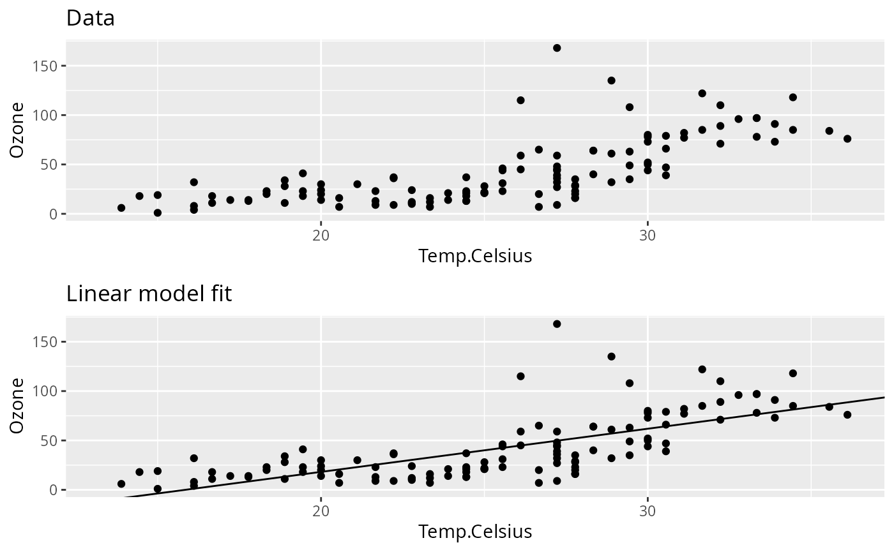

Generally speaking, one should keep pipeline steps as simple as possible, basically following the principle “one step, one task”. While splitting up analysis steps into multiple functions naturally becomes hard to manage with a growing number of functions, with {pipeflow}, which manages all function and parameter dependencies for you, this feels rather easy.
Following this principle, most of the pipeline steps will carry intermediate results while only a few steps contain the final output we are interested in.
This vignette shows how to conveniently tag and collect those final outputs as well as how to filter pipelines via {pipeflow}s view functionality.
Tagging steps
Tags let you label steps with meaningful keywords so you can later
filter the pipeline by topic, stage, or output type. Tags can be set
during pipeline creation or later using pip_set_tags().
library(pipeflow)
pip <- pip_new("my-pip") |>
pip_add(
"data",
function(data = airquality) data
) |>
pip_add("data_prep",
function(data = ~data) {
replace(data, "Temp.Celsius", (data[, "Temp"] - 32) * 5 / 9)
},
tags = "data" # <-- set 'data' tag
) |>
pip_add(
"data_summary",
function(
data = ~data_prep,
xVar = "Temp.Celsius",
yVar = "Ozone"
) {
format(summary(data[, c(xVar, yVar)])) |>
as.data.frame(row.names = NA)
},
tags = c("data", "summary") # <-- set 'data' and 'summary' tags
) |>
pip_add(
"data_plot",
function(
data = ~data_prep,
xVar = "Temp.Celsius",
yVar = "Ozone"
) {
require(ggplot2, quietly = TRUE)
ggplot(data) +
geom_point(aes(.data[[xVar]], .data[[yVar]])) +
labs(title = "Data")
},
tags = c("data", "plot") # <-- set 'data' and 'plot' tags
) |>
pip_add(
"model_fit",
function(
data = ~data_prep,
xVar = "Temp.Celsius",
yVar = "Ozone"
) {
lm(paste(yVar, "~", xVar), data = data)
},
tags = c("model", "fit") # <-- set 'model' and 'fit' tags
) |>
pip_add(
"model_summary",
function(fit = ~model_fit) {
summary(fit) |>
coefficients() |>
as.data.frame()
},
tags = c("model", "summary") # <-- set 'model' and 'summary' tags
) |>
pip_add(
"model_plot",
function(
model = ~model_fit,
data_plot = ~data_plot,
xVar = "Temp.Celsius",
yVar = "Ozone"
) {
coeffs <- coefficients(model)
data_plot +
geom_abline(intercept = coeffs[1], slope = coeffs[2]) +
labs(title = "Linear model fit")
},
tags = c("model", "plot") # <-- set 'model' and 'plot' tags
)We used two families of tags:
"data"/"model" to distinguish the topic, and
"summary"/"plot"/"fit" for the
output type. Whenever tags are defined, they are shown in the pipeline
overview (see rightmost column):
pip
# <pipeflow_pip> my-pip (7 steps)
# -------------------------------
# step depends out state tags
# 1: data [NULL] new
# 2: data_prep data [NULL] new data
# 3: data_summary data_prep [NULL] new data,summary
# 4: data_plot data_prep [NULL] new data,plot
# 5: model_fit data_prep [NULL] new model,fit
# 6: model_summary model_fit [NULL] new model,summary
# 7: model_plot model_fit,data_plot [NULL] new model,plotBefore showing how to make use of the tags, let’s run the pipeline and inspect the output individually as we did in the previous vignettes.
pip_run(pip)
# info [2026-06-20 19:20:07.873 UTC]: Start run of pipeflow_pip 'my-pip'
# info [2026-06-20 19:20:07.873 UTC]: Step 1/7 data
# info [2026-06-20 19:20:07.875 UTC]: Step 2/7 data_prep
# info [2026-06-20 19:20:07.878 UTC]: Step 3/7 data_summary
# info [2026-06-20 19:20:07.881 UTC]: Step 4/7 data_plot
# info [2026-06-20 19:20:08.572 UTC]: Step 5/7 model_fit
# info [2026-06-20 19:20:08.576 UTC]: Step 6/7 model_summary
# info [2026-06-20 19:20:08.583 UTC]: Step 7/7 model_plot
# info [2026-06-20 19:20:08.591 UTC]: Finished run of pipeflow_pip 'my-pip'
pip
# <pipeflow_pip> my-pip (7 steps)
# -------------------------------
# step depends out state tags
# 1: data <data.frame[153x6]> done
# 2: data_prep data <data.frame[153x7]> done data
# 3: data_summary data_prep <data.frame[7x2]> done data,summary
# 4: data_plot data_prep <ggplot2::ggplot> done data,plot
# 5: model_fit data_prep <lm[13]> done model,fit
# 6: model_summary model_fit <data.frame[2x4]> done model,summary
# 7: model_plot model_fit,data_plot <ggplot2::ggplot> done model,plot
pip[["data_plot", "out"]]
pip[["model_plot", "out"]]
Flat output collection
pip_collect_out() returns all step outputs as a flat
named list^ [ Below, we only show the names of the list elements, to
keep the vignette concise.].
out <- pip_collect_out(pip)
names(out)
# [1] "data" "data_prep" "data_summary" "data_plot" "model_fit" "model_summary"
# [7] "model_plot"Filtered output using tags
To collect only the output of steps with a specific tag, we use
pip_view(), which is {pipeflow}’s general-purpose function
for filtering pipelines, and then call pip_collect_out() on
the filtered pipeline view. For example, to collect only the plots, we
can filter by the plot tag.
pip_view(pip, tags = "plot")
# <pipeflow_view> my-pip view (2 of 7 steps)
# ------------------------------------------
# step depends out state tags
# data_plot data_prep <ggplot2::ggplot> done data,plot
# model_plot model_fit,data_plot <ggplot2::ggplot> done model,plot
pip |>
pip_view(tags = "plot") |>
pip_collect_out() |>
gridExtra::grid.arrange(grobs = _, nrow = 2)
Grouped output via views
Grouped output is achieved by composing pip_view() with
pip_collect_out(). For example, to collect outputs grouped
by topic ("data" and "model"):
grouped <- list(
data = pip_view(pip, tags = "data") |> pip_collect_out(),
model = pip_view(pip, tags = "model") |> pip_collect_out()
)
names(grouped[["data"]])
# [1] "data_prep" "data_summary" "data_plot"
names(grouped[["model"]])
# [1] "model_fit" "model_summary" "model_plot"More on views
To make the example a bit more interesting, we first update some parameters.
pip_set_params(pip, params = list(xVar = "Solar.R", yVar = "Wind"))
pip
# <pipeflow_pip> my-pip (7 steps)
# -------------------------------
# step depends out state tags
# 1: data <data.frame[153x6]> done
# 2: data_prep data <data.frame[153x7]> done data
# 3: data_summary data_prep <data.frame[7x2]> outdated data,summary
# 4: data_plot data_prep <ggplot2::ggplot> outdated data,plot
# 5: model_fit data_prep <lm[13]> outdated model,fit
# 6: model_summary model_fit <data.frame[2x4]> outdated model,summary
# 7: model_plot model_fit,data_plot <ggplot2::ggplot> outdated model,plot{pipeflow} views provide a variety of filtering options. In the
previous section, the filtering was done based on tags, but you can also
filter based on other properties, for example, to select all
outdated steps that depend on the model_fit
step:
pip |> pip_view(filter = list(depends = "model_fit", state = "outdated"))
# <pipeflow_view> my-pip view (2 of 7 steps)
# ------------------------------------------
# step depends out state tags
# model_summary model_fit <data.frame[2x4]> outdated model,summary
# model_plot model_fit,data_plot <ggplot2::ggplot> outdated model,plotor using regex-based filtering to filter all outdated steps starting
with data:
pip |>
pip_view(filter = list(step = "^data", state = "outdated"), fixed = FALSE)
# <pipeflow_view> my-pip view (2 of 7 steps)
# ------------------------------------------
# step depends out state tags
# data_summary data_prep <data.frame[7x2]> outdated data,summary
# data_plot data_prep <ggplot2::ggplot> outdated data,plotViews can also be chained together:
v <- pip |> pip_view(filter = list(state = "outdated"))
v
# <pipeflow_view> my-pip view (5 of 7 steps)
# ------------------------------------------
# step depends out state tags
# data_summary data_prep <data.frame[7x2]> outdated data,summary
# data_plot data_prep <ggplot2::ggplot> outdated data,plot
# model_fit data_prep <lm[13]> outdated model,fit
# model_summary model_fit <data.frame[2x4]> outdated model,summary
# model_plot model_fit,data_plot <ggplot2::ggplot> outdated model,plot
v2 <- v |> pip_view(tags = "plot")
v2
# <pipeflow_view> my-pip view view (2 of 7 steps)
# -----------------------------------------------
# step depends out state tags
# data_plot data_prep <ggplot2::ggplot> outdated data,plot
# model_plot model_fit,data_plot <ggplot2::ggplot> outdated model,plotLast but not least, views can be run as pipelines themselves, which allows to conveniently re-run only the filtered steps, while {pipeflow} ensures that any upstream dependencies are run first if needed.
v2 |> pip_run()
# info [2026-06-20 19:20:10.109 UTC]: Start run of pipeflow_view 'my-pip view view'
# info [2026-06-20 19:20:10.109 UTC]: Step 1/4 [upstream] data_prep - skipping done step
# info [2026-06-20 19:20:10.109 UTC]: Step 2/4 [view] data_plot
# info [2026-06-20 19:20:10.120 UTC]: Step 3/4 [upstream] model_fit
# info [2026-06-20 19:20:10.124 UTC]: Step 4/4 [view] model_plot
# info [2026-06-20 19:20:10.131 UTC]: Finished run of pipeflow_view 'my-pip view view'Having a closer look at the run log, you’ll see which steps were
re-run as part of the [view] and which were re-run as
[upstream] dependencies. Since all views work by reference
on the given pipeline, the original pipeline is now up-to-date for the
filtered steps.
pip
# <pipeflow_pip> my-pip (7 steps)
# -------------------------------
# step depends out state tags
# 1: data <data.frame[153x6]> done
# 2: data_prep data <data.frame[153x7]> done data
# 3: data_summary data_prep <data.frame[7x2]> outdated data,summary
# 4: data_plot data_prep <ggplot2::ggplot> done data,plot
# 5: model_fit data_prep <lm[13]> done model,fit
# 6: model_summary model_fit <data.frame[2x4]> outdated model,summary
# 7: model_plot model_fit,data_plot <ggplot2::ggplot> done model,plot